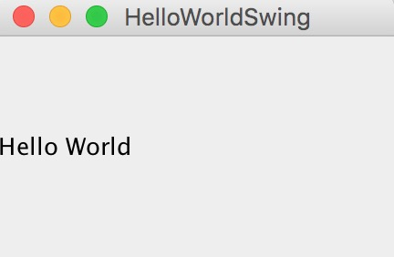
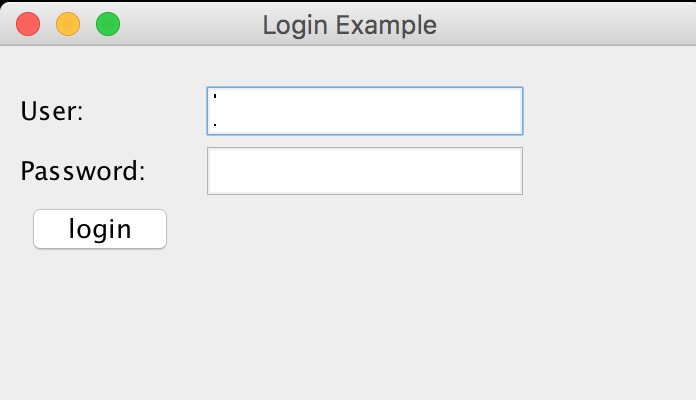

Swing es un kit de herramientas de interfaz gráfica (GUI) diseñado para Java.
Swing es parte de las clases fundamentales de Java.
Swing incluye componentes de interfaz gráfica de usuario (GUI) como: cuadros de texto, botones, paneles divisorios y tablas.
Swing proporciona muchos elementos de visualización en pantalla mejores que AWT. Están escritos en Java puro, por lo que, al igual que el propio Java, pueden ejecutarse de forma multiplataforma, a diferencia de AWT. Son parte de JFC. Soportan paneles y temas intercambiables (temas específicos predeterminados de varios sistemas operativos), pero no utilizan realmente los dispositivos proporcionados por la plataforma nativa, sino que simplemente los imitan en apariencia. Esto significa que puedes usar cualquier panel compatible con Java en cualquier plataforma. La desventaja de los componentes ligeros es que se ejecutan más lentamente; la ventaja es que pueden adoptar un comportamiento uniforme en todas las plataformas.
Programa Hello World
El código del archivo HelloWorldSwing.java es el siguiente:
import javax.swing.*;
public class HelloWorldSwing {
/**{
* 创建并显示GUI。出于线程安全的考虑，
* 这个方法在事件调用线程中调用。
*/
private static void createAndShowGUI() {
// 确保一个漂亮的外观风格
JFrame.setDefaultLookAndFeelDecorated(true);
// 创建及设置窗口
JFrame frame = new JFrame("HelloWorldSwing");
frame.setDefaultCloseOperation(JFrame.EXIT_ON_CLOSE);
// 添加 "Hello World" 标签
JLabel label = new JLabel("Hello World");
frame.getContentPane().add(label);
// 显示窗口
frame.pack();
frame.setVisible(true);
}
public static void main(String[] args) {
// 显示应用 GUI
javax.swing.SwingUtilities.invokeLater(new Runnable() {
public void run() {
createAndShowGUI();
}
});
}
}
Ejecuta el siguiente comando para ver el resultado:
$ javac HelloWorldSwing.java $ java HelloWorldSwing

Un ejemplo de cuadro de inicio de sesión de usuario
El código del archivo SwingLoginExample.java es el siguiente:
import javax.swing.JButton;
import javax.swing.JFrame;
import javax.swing.JLabel;
import javax.swing.JPanel;
import javax.swing.JPasswordField;
import javax.swing.JTextField;
public class SwingLoginExample {
public static void main(String[] args) {
// 创建 JFrame 实例
JFrame frame = new JFrame("Login Example");
// Setting the width and height of frame
frame.setSize(350, 200);
frame.setDefaultCloseOperation(JFrame.EXIT_ON_CLOSE);
/* 创建面板，这个类似于 HTML 的 div 标签
* 我们可以创建多个面板并在 JFrame 中指定位置
* 面板中我们可以添加文本字段，按钮及其他组件。
*/
JPanel panel = new JPanel();
// 添加面板
frame.add(panel);
/*
* 调用用户定义的方法并添加组件到面板
*/
placeComponents(panel);
// 设置界面可见
frame.setVisible(true);
}
private static void placeComponents(JPanel panel) {
/* 布局部分我们这边不多做介绍
* 这边设置布局为 null
*/
panel.setLayout(null);
// 创建 JLabel
JLabel userLabel = new JLabel("User:");
/* 这个方法定义了组件的位置。
* setBounds(x, y, width, height)
* x 和 y 指定左上角的新位置，由 width 和 height 指定新的大小。
*/
userLabel.setBounds(10,20,80,25);
panel.add(userLabel);
/*
* 创建文本域用于用户输入
*/
JTextField userText = new JTextField(20);
userText.setBounds(100,20,165,25);
panel.add(userText);
// 输入密码的文本域
JLabel passwordLabel = new JLabel("Password:");
passwordLabel.setBounds(10,50,80,25);
panel.add(passwordLabel);
/*
*这个类似用于输入的文本域
* 但是输入的信息会以点号代替，用于包含密码的安全性
*/
JPasswordField passwordText = new JPasswordField(20);
passwordText.setBounds(100,50,165,25);
panel.add(passwordText);
// 创建登录按钮
JButton loginButton = new JButton("login");
loginButton.setBounds(10, 80, 80, 25);
panel.add(loginButton);
}
}
Ejecuta el siguiente comando para ver el resultado:
$ javac SwingLoginExample.java $ java SwingLoginExample

Análisis de conceptos:
JFrame– La idea básica de un programa GUI de Java se basa en JFrame, que es un objeto de ventana (window) en la pantalla que puede maximizarse, minimizarse y cerrarse.
JPanel– Clase de contenedor de panel en el kit de herramientas de interfaz gráfica de usuario (GUI) de Java, Swing. Está incluida en el paquete javax.swing, puede anidarse; su función es agrupar componentes con la misma función lógica en una ventana. Es un contenedor ligero que puede agregarse a una ventana JFrame.
JLabel– El objeto JLabel puede mostrar texto, imágenes o ambos. Se puede especificar dónde se alinea el contenido de la etiqueta dentro del área de visualización configurando la alineación vertical y horizontal. De forma predeterminada, la etiqueta está centrada verticalmente en su área de visualización. De forma predeterminada, las etiquetas que solo muestran texto están alineadas al borde inicial, mientras que las etiquetas que solo muestran imágenes están centradas horizontalmente.
JTextField– Un componente ligero que permite editar texto de una sola línea.
JPasswordField– Nos permite ingresar una línea de texto como en un cuadro de entrada, pero oculta asteriscos (*) o puntos para crear una contraseña (password).
JButton– Una instancia de la clase JButton. Se utiliza para crear botones como "Login" en el ejemplo.